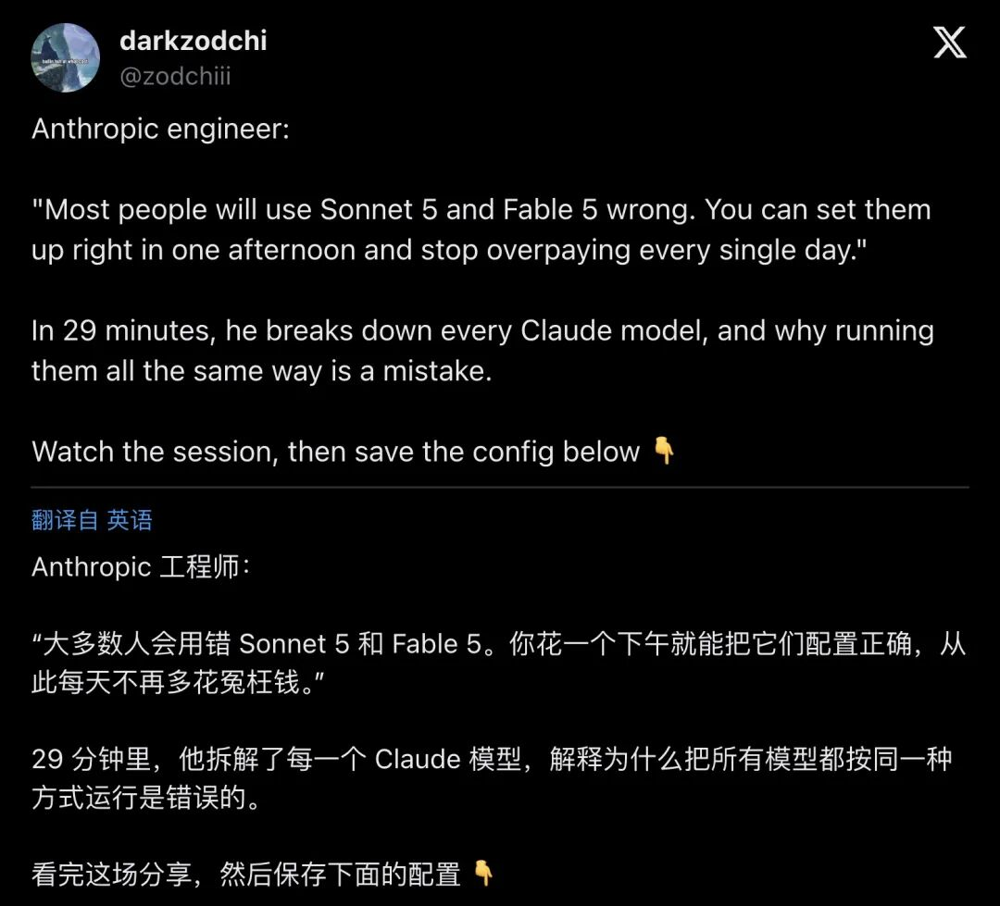
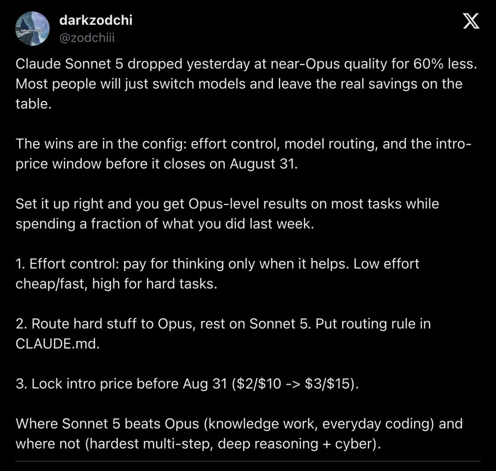
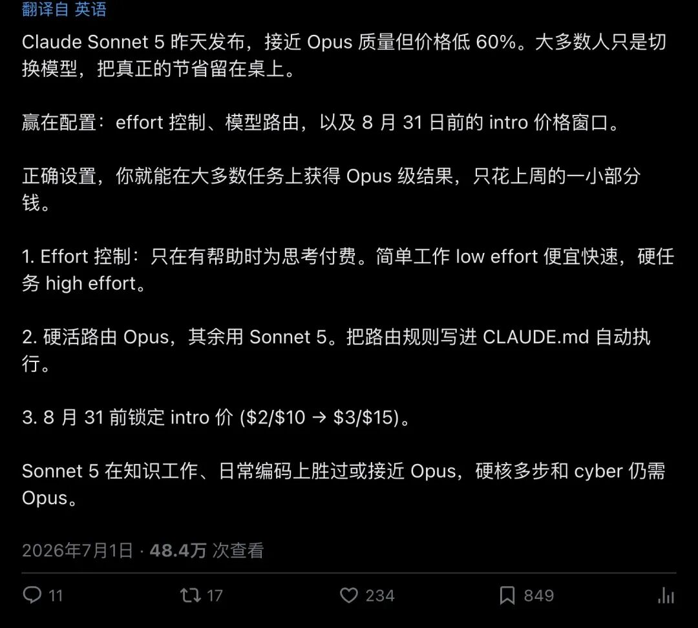
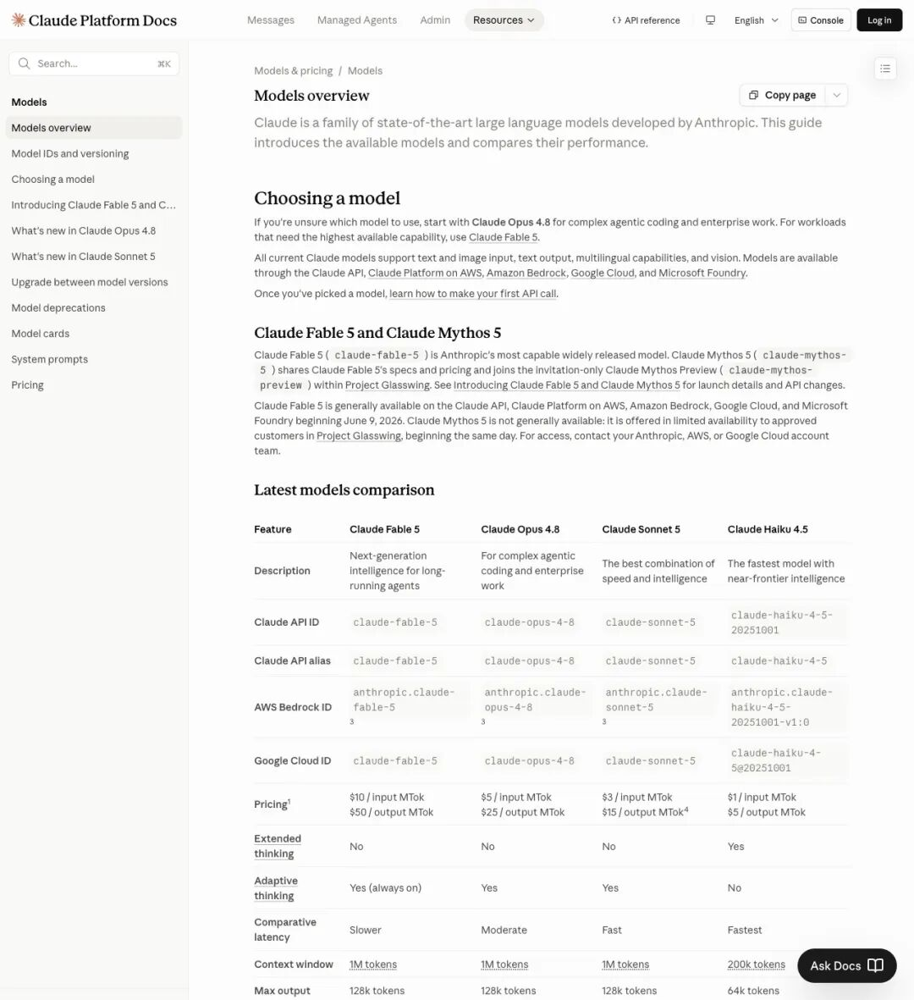
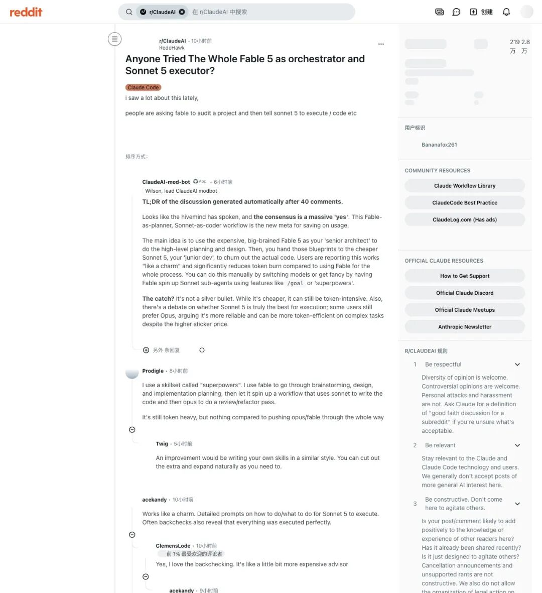

台上,一个叫Lucas Smedley的Anthropic工程师,对着台下的开发者说了一句让不少人脸红的话。 他说,你们手里最新的两个模型,九成人都在用错。 这句话被人录下来发到X上,29分钟的分享视频,半天时间涨到46.5万次播放。
一场发布会,一句大实话
2026年7月1日,一个叫@zodchiii的账号发了条帖子。
配图是一场叫"Code w/ Claude"的活动现场,大屏幕上写着"Picking the right model"(如何选对模型)。台上站着的人,胸卡写着"Lucas Smedley,Member of Technical Staff,Anthropic"。
帖子里引用了他的原话:
"Most people will use Sonnet 5 and Fable 5 wrong. You can set them up right in one afternoon and stop overpaying every single day."
「大多数人会用错Sonnet 5和Fable 5。你花一个下午就能把它们配置正确,从此每天不再多花冤枉钱。」

▲ @zodchiii发布的现场视频截图,29分钟分享,发布半天播放量46.5万,收藏5.3千
这条帖子底下没有太多争吵,反而是一片"确实"。因为几乎每个用过Claude的人,都干过同一件事:新模型一出,上来就切过去,然后该怎么用还怎么用。
结果就是,账单该多贵还是多贵。
Sonnet 5便宜了六成,但大多数人一分没省到
时间往前拨一天。
2026年6月30日,Anthropic上线了Claude Sonnet 5。官方页面的标题写得干脆，"Introducing Claude Sonnet 5",配图是一株手绘风格的花卉数字"5"。
▲ Anthropic官网Sonnet 5发布页:agentic coding跑分63.2%,逼近Opus 4.8的69.2%
页面里有句话很关键:Sonnet 5的表现"接近Opus 4.8,但价格更低"("its performance is close to that of Opus 4.8, but at lower prices")。在agentic coding基准SWE-bench Pro上,Sonnet 5拿下63.2%,上一代Sonnet 4.6只有58.1%,而作为参照的Opus 4.8是69.2%。
差距被大幅拉近了,价格却砍了一大块。@zodchiii在自己的长文帖里给出一个数字:同等质量,价格低60%。
 
▲ @zodchiii配置详解帖,7月1日发布,48.4万次浏览
但他紧跟着又补了一句,戳破了不少人的幻想:
"Most people will just switch models and leave the real savings on the table."
「大多数人只会切换模型,把真正能省下来的钱留在桌上。」
翻译成人话就是:换模型这一步,只是省钱的十分之一。剩下的九成,藏在没人愿意花时间调的配置里。
真正吃钱的开关,叫effort,不叫模型
先摆一个事实:2026年的Claude家族,早就不再是"一个模型打天下"了。
打开Claude官方文档的模型总览页,能看到清晰的四层结构。

▲ 官方文档模型对比表:四款模型的定位、价格、上下文窗口一目了然
- Fable 5
(Mythos-class):目前能力最强的公开模型,主打"最难的知识工作和编程问题"。价格也最高,$10/百万输入token,$50/百万输出token。 - Opus 4.8
:复杂agentic编程和企业级工作的老将,$5/$25。 - Sonnet 5
:速度和智能的最佳平衡,本次主角,原价$3/$15。 - Haiku 4.5
:跑得最快,擅长量大但简单的任务,$1/$5。
但光记住这张价目表没用。真正决定账单高低的,是另一个大多数人压根没注意过的变量，effort(思考深度)。
Claude的每一次调用,除了选模型,还能选effort等级:low、medium、high、extra-high。等级越高,模型"想"得越久,token烧得越多,价格自然越贵。
官方给出的成本-性能曲线显示一个反直觉的结论:Sonnet 5开到medium档,性价比曲线覆盖的范围比上一代宽得多,很多任务的效果已经能摸到Opus的边。可一旦无脑开到max档,曲线可能会拐个弯，Sonnet 5的极限档,有时候比Opus的medium档还贵,效果还没对方好。
这就是所谓的"高effort陷阱"。你以为自己在用更便宜的模型,其实是在用更贵的方式,重新造出一个"更贵的Opus"。
一份三十分钟能抄完的配置
@zodchiii的长文帖里,把整个方法拆成三步,每一步都能照抄。
第一步:管住effort,别让模型瞎想
在项目根目录的CLAUDE.md里写清楚规则,模型每次启动都会读取:
# Model & Effort Policy
## Effort Rules
- Low effort: formatting, renames, simple boilerplate, one-line fixes, docstrings.
- Medium (default): normal coding, analysis, research summaries, feature additions.
- High effort: tricky debugging with hidden state, multi-file refactors spanning
modules, architecture decisions, security-sensitive logic, long-horizon plans.
- Extra-high: reserve for true frontier problems; otherwise consider routing to
stronger model first.
翻译过来就是:排版、改名字、一行修复这种活,低档打发;日常写代码、做分析,默认档就够;真正棘手的多文件重构、架构决策,才配得上高档。
第二步:把"该找谁"写成规则,别临时起意
## Routing Rules (Sonnet 5 default, escalate on evidence)
- Knowledge work / research / drafting → Sonnet 5 always.
- Everyday / brownfield coding, bug tracing → Sonnet 5.
- Hardest multi-step agentic coding → compare Sonnet high vs Opus medium.
- Deep reasoning + cyber/security-sensitive → Opus 4.8.
也就是说,九成日常工作,默认交给Sonnet 5,只有证据表明这活确实啃不动,才升级到Opus。习惯性地"遇到难题就上最贵的模型",恰恰是账单失控的起点。
第三步:锁住限时折扣
Sonnet 5目前是"尝鲜价":$2/百万输入token,$10/百万输出token,截止到2026年8月31日。过了这个日期,价格会跳到$3/$15,涨幅50%。
如果手里正好压着大批量的活，整库迁移、批量生成、全量代码审计,现在做和8月底之后做,成本能差出三分之一。
Reddit上的"共识":贵模型管规划,便宜模型管干活
配置写完之后,真正落地的用法,社区里已经有了自己的答案。
Reddit的r/ClaudeAI板块,有人发帖问:有没有人试过让Fable 5当"总指挥",Sonnet 5当"执行者"?

▲ r/ClaudeAI热帖,自动摘要显示"共识是压倒性的yes"
板块的自动摘要机器人总结了40条评论后给出结论:
"The consensus is a massive 'yes'... Users are reporting this works 'like a charm' and significantly reduces token burn."
「共识是压倒性的'是'……用户反馈这种方式'像变魔术一样好用',而且明显减少了token消耗。」
具体做法很简单:先让贵模型做规划,再让便宜模型去执行。
一个用户描述得很形象，把Fable 5当成"资深架构师",负责做高层设计,产出蓝图;再把蓝图交给"初级工程师"Sonnet 5,去把代码写出来。有人甚至再加一层,让Opus做最后的复查和重构。
评论区一个用户写道:
"Works like a charm. Detailed prompts on how to do/what to do for Sonnet 5 to execute. Often backchecks also reveal that everything was executed perfectly."
「效果很好。给Sonnet 5的提示词写清楚具体怎么做、做什么,回头检查经常发现全都执行到位了。」
当然,摘要里也留了个"但是"，这套打法照样会消耗不少token,社区里对"Sonnet 5够不够格当最佳执行者"仍有分歧,有人觉得Opus在复杂任务上更稳,虽然单价更贵。
从"一个人对一个模型",到"总指挥+执行者"的多代理分工,这本身就是过去几个月agentic工作方式的一次转向。
别信榜单,拿自己的活试一遍
写到配置这一步,还剩最后一个容易被忽略的动作:自测。
官方公布的benchmark再好看,也只是别人的任务集。@zodchiii给出的建议很实在:找5个最近真实用过Opus的任务,原样丢给Sonnet 5的medium档和high档各跑一遍,对比效果、步数、token消耗。
这个动作花不了太久,却决定了前面写的所有规则,到底适不适合自己手头的活。有人换了Sonnet 5之后账单反而更高，往往就是因为新版本的分词器让同样的文本token数变多了,再加上无意识地把effort开高了,两笔账叠在一起,省下来的钱又吐了回去。
一个下午的配置,换来的不只是省钱
回到开头那句话。
Lucas Smedley站在台上说这句话的时候,针对的其实不只是Sonnet 5和Fable 5这两个具体型号。
模型能力越来越强,价格却不会一直线性下降,调用方式也会越来越复杂。能力和成本之间的取舍,不会随着某个新模型发布就消失。
真正能穿越这场博弈的,是把判断标准写成一套能重复执行的规则:什么活配什么档位,什么难度找哪个模型,大批量的事情赶在价格窗口关闭前做完。
这套思路不会随着Sonnet 6、Fable 6的发布过时。会用规则的人,和只会跟着新模型走的人,拉开的差距只会越来越大。
那个下午,你打算什么时候空出来?